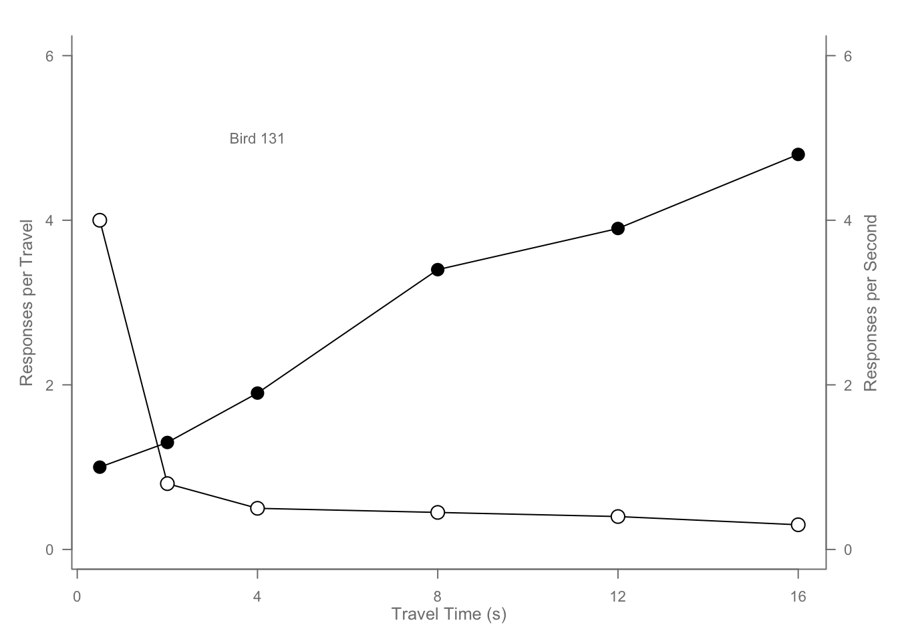

# Scatterplot example from murrell01.R
# Defining data points
x <- c(0.5, 2, 4, 8, 12, 16)
y1 <- c(1, 1.3, 1.9, 3.4, 3.9, 4.8)
y2 <- c(4, .8, .5, .45, .4, .3)
# Setting parameters: orientation (las=1), margins (mar=c(4, 4, 2, 4)), and text size (cex=0.7)
par(las=1, mar=c(4, 4, 2, 4), cex=.7)
# Setting up an empty plot window
plot.new()
plot.window(range(x), c(0, 6))
# Adding lines for y1 and y2 data points
lines(x, y1)
lines(x, y2)
# Adding points with different symbols and sizes
points(x, y1, pch=16, cex=2) # Solid circles with larger size
points(x, y2, pch=21, bg="white", cex=2) # Circles with white background
# Setting color for plot elements
par(col="gray50", fg="gray50", col.axis="gray50")
# Adding x and y axes with custom intervals
axis(1, at=seq(0, 16, 4)) # X-axis with ticks from 0 to 16, step 4
axis(2, at=seq(0, 6, 2)) # Left y-axis with ticks from 0 to 6, step 2
axis(4, at=seq(0, 6, 2)) # Right y-axis with the same tick interval
# Adding a box around the plot with 'u'-shaped corners
box(bty="u")
# Adding axis labels
mtext("Travel Time (s)", side=1, line=2, cex=0.8) # X-axis label
mtext("Responses per Travel", side=2, line=2, las=0, cex=0.8) # Left y-axis label
mtext("Responses per Second", side=4, line=2, las=0, cex=0.8) # Right y-axis label
# Adding text annotation
text(4, 5, "Bird 131") 
# Resetting parameters
par(mar=c(5.1, 4.1, 4.1, 2.1), col="black", fg="black", col.axis="black")